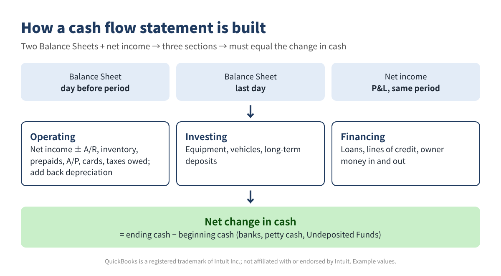
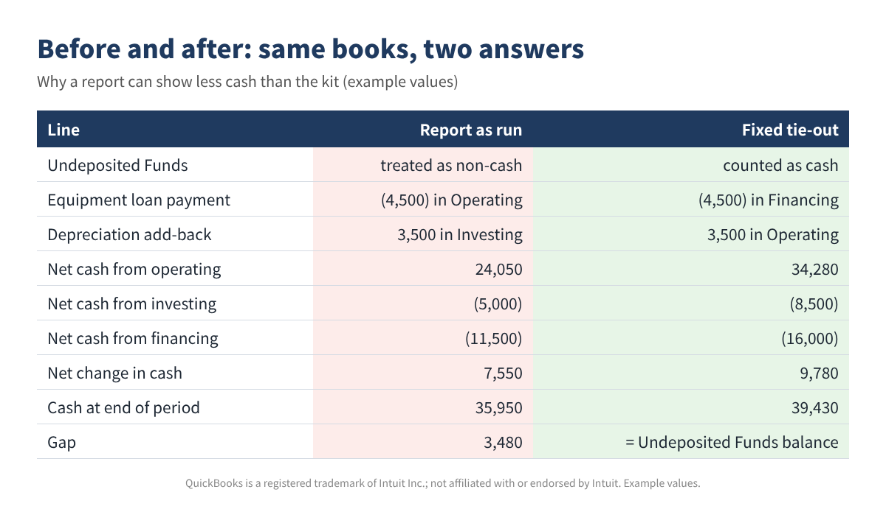
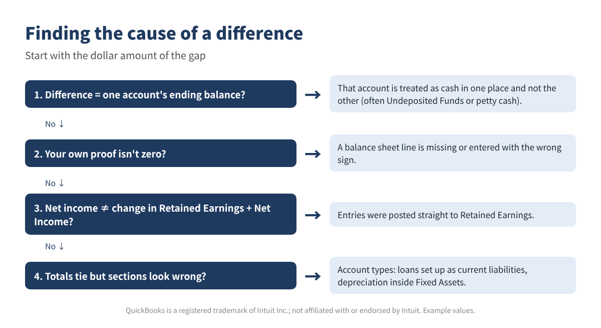

You run the Statement of Cash Flows, look at Cash at end of period, and it doesn't match your bank balances or the cash on your Balance Sheet. Or the totals match, but loan payments show up in Operating and depreciation sits in Investing. This is one of the most repeated questions in QuickBooks forums, and many threads end with a workaround rather than a fix. If you hand financial statements to a lender, a partner or your tax preparer, a cash flow statement that doesn't tie undermines everything else in the package.
The good news: a cash flow statement is pure arithmetic. If your Balance Sheet balances, the statement must tie to the penny. This guide shows you how to rebuild it yourself from two Balance Sheets and one Profit & Loss, and how to find the exact cause of any difference.
The indirect method starts with net income and adjusts it for every balance sheet account that changed. Cash itself is the one thing it doesn't list, because cash is the answer.

The sign rule is where most hand-built statements go wrong: when a non-cash asset goes up, cash goes down (you spent money or haven't collected it yet). When a liability or equity account goes up, cash goes up (you borrowed, or someone put money in).
Intuit's help article on the Statement of Cash Flows gives this path: go to Reports, then Standard reports, search for the report name and open it, then use Customize to change the report period. Use the same path for Balance Sheet (run it twice, once for each date) and Profit and Loss. Export each one to Excel. The same article notes that the Online Statement of Cash Flows runs on accrual basis only.
Put one row per balance sheet account in Excel or Google Sheets: name in A, type in B, beginning balance in C, ending balance in D. Enter amounts the way the Balance Sheet shows them: liabilities and equity as positive numbers, accumulated depreciation and owner draws as negatives.
| Account (EXAMPLE values) | Type | Dec 31, 2025 | Oct 31, 2026 | Change | Cash effect |
|---|---|---|---|---|---|
| Business Checking | Bank (cash) | 18,400 | 23,950 | 5,550 | — |
| Undeposited Funds | Cash | 1,250 | 3,480 | 2,230 | — |
| Accounts Receivable | Asset | 6,200 | 8,900 | 2,700 | (2,700) |
| Equipment | Fixed asset | 42,000 | 50,500 | 8,500 | (8,500) |
| Accumulated Depreciation | Contra asset | (12,600) | (16,100) | (3,500) | 3,500 |
| Business Credit Card | Liability | 2,850 | 4,120 | 1,270 | 1,270 |
| Equipment Loan | Liability | 28,000 | 23,500 | (4,500) | (4,500) |
| Owner Draws | Equity | 0 | (14,000) | (14,000) | (14,000) |
=D2-C2=IF(B2="Asset",-(D2-C2),D2-C2) (leave cash accounts blank)=SUMIF(F:F,"Operating",E:E), and the same for Investing and Financing in a section column F=NetIncome+Operating+Investing+Financing=EndingCash-BeginningCash-NetChange should be 0Treat Retained Earnings and the Net Income line together: their combined change should equal net income for the period. If it doesn't, someone posted entries directly to Retained Earnings, and that amount belongs in Financing until your accountant reviews it.
| Section (EXAMPLE, Jan 1 – Oct 31, 2026) | Amount |
|---|---|
| Net income | 32,850 |
| Operating adjustments (A/R, inventory, prepaid, depreciation, A/P, card, taxes owed) | 1,430 |
| Net cash from operating | 34,280 |
| Net cash from investing (equipment) | (8,500) |
| Net cash from financing (line of credit, loan, owner draws) | (16,000) |
| Net change in cash | 9,780 |
| Cash at beginning (29,650) + change | 39,430 |
| Cash on the ending Balance Sheet (23,950 + 12,000 + 3,480) | 39,430 ✓ |

Look at the size of the gap first. If it equals one account's ending balance exactly, that account is being counted as cash in one place and not in the other. Undeposited Funds and petty cash are the usual suspects. If your own proof is off, a balance sheet line is missing or has the wrong sign.

Desktop: Edit > Preferences > Reports & Graphs > Company Preferences. Under Statement of Cash Flows, the Classify button lets you assign each balance sheet account to Operating, Investing or Financing (admin only). Online: an Intuit moderator confirmed in the QuickBooks Community that reclassifying accounts on this report isn't available in Online; the section follows the account type. If a long-term loan was set up as an Other Current Liability, review the account type with your accountant, or present your own rebuilt statement.
It holds payments you have received but not yet deposited, so most bookkeepers treat it as cash. Whatever you choose, be consistent, and clear it out regularly so the question goes away.
Accumulated depreciation usually sits inside the Fixed Asset group, so the report treats its change like an asset purchase. Under the indirect method, depreciation is a non-cash expense that is added back in Operating.
Not the section placement, based on Intuit's answers in the Community. You can correct account types where they are wrong, or rebuild the statement in a spreadsheet as shown above.
No. Profit can be tied up in receivables and inventory, spent on equipment, or used to pay down loans and owner draws. The three sections show where it went.
You can download the ready-made Cash Flow Statement Tie-Out Kit 2026 for free in the Free kit download box below (Excel + PDF guide, no sign-up).
This article is for education only and is not tax, legal or accounting advice. All numbers are examples. Menu paths were checked against Intuit's help articles in November 2026 and can change. QuickBooks is a registered trademark of Intuit Inc.; not affiliated with or endorsed by Intuit.